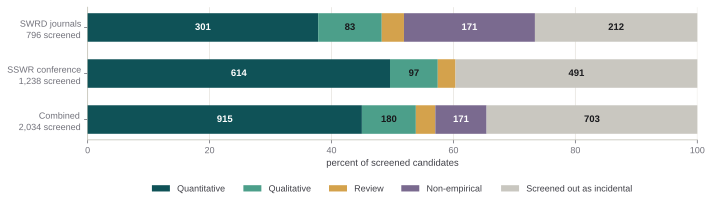
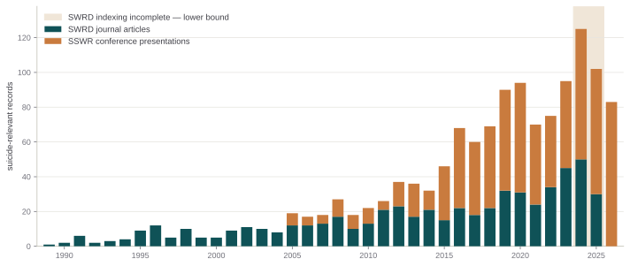
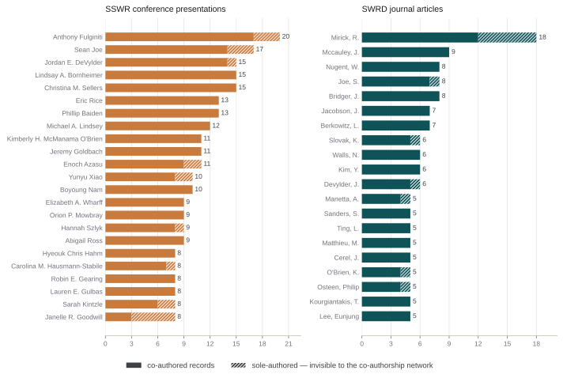
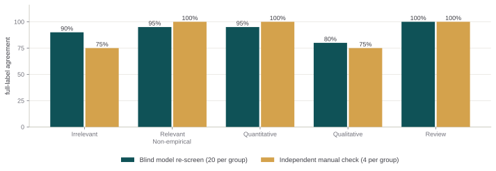

Every suicide-related article in the 88 disciplinary social work journals and every suicide-related presentation at the SSWR conference — found, read, and sorted by what kind of study each one is. This page reports what that literature contains, then shows exactly how it was assembled. It counts what social work publishes in its own venues, not every suicide study a social worker has written.
Before any of the numbers: this is a study of what social work publishes in its own venues. That boundary is deliberate, it is the thing being measured, and it excludes a great deal of suicide research done by social workers.
The 88 disciplinary social work journals systematically compiled by Perron, Victor, and Qi, covering 87,329 records from 1989 onward. "Social work journal" here means a journal in that defined set — not any journal a social worker publishes in.
Every presentation at the annual Society for Social Work and Research conference, 23,793 in all, with abstracts and canonical author identities. The conference is where the field's research is presented regardless of where it is later published, which makes it a usefully different lens on the same discipline.
Many social work scholars publish their suicide research elsewhere, and none of it is counted here. Suicidology, psychiatry, public health, medical, and interdisciplinary journals are outside the journal set by construction — including Suicide and Life-Threatening Behavior, the field's flagship suicidology journal, and the JAMA family. A social work researcher can have a substantial suicide bibliography and appear only once or twice in these pages, or not at all.
So read every count below as suicide scholarship within social work's own publishing venues. That is a real and worthwhile thing to measure — it is how a discipline talks to itself — but it is not the same as all suicide research conducted by social workers. Two worked examples appear later, alongside the co-authorship network where the boundary matters most.
A record became a screening candidate when its title or abstract contained any word beginning with the stem suicid — so suicide, suicidal, suicidality, suicidology, and their compounds are all matched, case-insensitively, at a word boundary. Nonsuicidal self-injury, self-harm, and euthanasia are not treated as suicide topics unless the record also uses a suicide-root term. The exact rule and the checks run against it are in the technical record.
Two thousand records in these databases mention suicide. Reading each one shows that about two-thirds are genuinely about suicide — and that when social work studies suicide, it studies it in a strikingly narrow set of ways.
Suicide turns up constantly as background: a sentence of rationale, one unexamined item in a list of mental-health concerns, a sample characteristic nobody analyzed. Separating those out is the whole job of screening, and it removed 703 records — 35% of everything the search returned.
1,160 of the 1,331 relevant records report original evidence; only 171 are conceptual pieces, editorials, practice overviews, or narrative reviews. That is a much higher empirical share than social work's writing on newer topics, where commentary tends to arrive first and evidence later. Suicide scholarship here is mature.
There is not a single systematic review, meta-analysis, or scoping review of suicide in this corpus before 2004. Two-thirds of the 65 have appeared since 2020, running at about six a year and 6.8% of empirical output — the highest share of any period. Averaged flat across thirty-seven years the number reads as thin; it is not thin, it is recent.
915 quantitative studies against 180 qualitative. Suicide research in these venues is overwhelmingly about measurement, prediction, and risk factors. Lived-experience work — what suicidality is like, what survivors of a loss actually need, why people do or do not disclose — is the smaller literature by a wide margin.
Every one of the 2,034 records the search returned ends up in exactly one of five buckets.

| What the study is | Records | % of relevant |
|---|---|---|
| Quantitative study | 915 | 68.7% |
| Qualitative study | 180 | 13.5% |
| Systematic review, meta-analysis, or scoping review | 65 | 4.9% |
| Non-empirical — commentary, theory, narrative review | 171 | 12.8% |
| All suicide-relevant records | 1,331 | 100.0% |
| Source | Screened | Relevant | Rate | Non-emp. | Quant. | Qual. | Review |
|---|---|---|---|---|---|---|---|
| SWRD journals, 1989–2025 | 796 | 584 | 73.4% | 171 | 301 | 83 | 29 |
| SSWR conference, 2005–2026 | 1,238 | 747 | 60.3% | 0 | 614 | 97 | 36 |
| Combined | 2,034 | 1,331 | 65.4% | 171 | 915 | 180 | 65 |
The conference is where suicide research shows up first and in the largest volume — 747 presentations against 584 journal articles — and all of it is empirical. The journals carry the discipline's thinking about suicide as well as its studies of it: every one of the 171 conceptual and commentary pieces is a journal article.
That zero is the single best validation on this page. Not one of the 747 SSWR presentations was classified as non-empirical — and that is exactly the right answer. SSWR is an empirical research conference; its submission process asks for a study, and conceptual and commentary work is not what the venue accepts. The correct count of non-empirical presentations in a suicide-topic sweep of that conference is zero, and the model produced zero, 747 times in a row, without ever being told what venue a record came from.
That is a harder test than it looks. The model saw only a title and an abstract; nothing in its input identified the source database. It had every opportunity to drift — to call a conceptually-framed presentation a commentary, or to label a thin abstract non-empirical because the design was hard to see. It did not do so once. And it did the opposite where it should have: all 171 non-empirical records it found are journal articles, which is where conceptual work actually lives.
The conference also drops more of its candidates in screening — 40% against the journals' 27%. Conference abstracts are longer and list more secondary measures, so suicide is likelier to appear somewhere in the text without being what the work is about.
Suicide has become a substantially larger share of what social work researchers present and publish, and the conference registered that shift before the journals did.

The journal series is a slow climb rather than a sudden arrival: single digits through the early 1990s, into the teens and twenties by the 2010s, 45 to 50 a year by 2023–2024. The conference series is steeper and starts later, holding under twenty a year until 2014 and then reaching 70 to 83 a year from 2024 on.
The 584 relevant journal articles are spread across 63 different journals. No outlet owns the topic: the largest holds 38 articles, 6.5% of the total, and the top ten together account for only 45%.
| Journal | Articles | % of 584 |
|---|---|---|
| Child & Adolescent Social Work Journal | 38 | 6.5% |
| Social Work in Mental Health | 37 | 6.3% |
| Social Work | 33 | 5.7% |
| Journal of Human Behavior in the Social Environment | 27 | 4.6% |
| British Journal of Social Work | 26 | 4.5% |
| Health & Social Work | 23 | 3.9% |
| Journal of Gerontological Social Work | 22 | 3.8% |
| Clinical Social Work Journal | 22 | 3.8% |
| Research on Social Work Practice | 20 | 3.4% |
| Social Work in Public Health | 16 | 2.7% |
| Top ten combined | 264 | 45.2% |
What the list shows is that suicide reaches the discipline through its populations rather than through a dedicated venue. The top two are a child-and-adolescent journal and a mental-health journal; gerontology, health, schools, and public health all appear. A researcher following this literature has to read across ten or more journals to see it whole — which is part of why the thinness of synthesis matters.
Evidence syntheses — systematic reviews, meta-analyses, scoping reviews — do not track the growth of primary research. They start from nothing and then outpace it.
| Period | Empirical records | Syntheses | Share | Per year |
|---|---|---|---|---|
| 1989–1999 | 25 | 0 | 0.0% | 0.0 |
| 2000–2009 | 104 | 4 | 3.8% | 0.4 |
| 2010–2014 | 128 | 7 | 5.5% | 1.4 |
| 2015–2019 | 301 | 13 | 4.3% | 2.6 |
| 2020–2026 | 602 | 41 | 6.8% | 5.9 |
The first synthesis in this corpus appears in 2004, fifteen years into the window. The rate climbs steeply after that — 0.4 a year in the 2000s, 1.4 in the early 2010s, 2.6 in the late 2010s, 5.9 in the 2020s — and the 2020s carry 41 of the 65, with ten in 2024 alone. As a share of empirical output the trend is upward but not smooth: it dips from 5.5% in 2010–2014 to 4.3% in 2015–2019, because primary studies grew faster than syntheses over those years, before reaching its high of 6.8%.
Two readings are available and this data does not settle between them. The generous one is that the field accumulated enough primary studies to be worth synthesising and is now doing so. The sceptical one echoes an argument made in other fields — that systematic reviews have become cheap to produce and abundant beyond their usefulness. Testing either would need a comparison against synthesis rates elsewhere, which is outside what these two databases can answer. What the numbers here do establish is that synthesis is the newest layer of this literature and the fastest-growing one. Note also that 2026 is conference-only, so the last row is not a complete year of journals.
The same corpus seen as people rather than papers. Node size is how many suicide-relevant records an author appears on; colour is how quantitative their own body of work is; an edge means they co-authored at least once.
Drag a node to pull the layout apart; hover a name in the key to find it in the graph. Position carries no meaning beyond connectivity — only who is joined to whom, and how tightly.
The two venues have different shapes. The conference network is denser and more clustered: research groups presenting together year after year, and it needed a higher cutoff than the journal graph to stay legible at all. The journal network is looser, with more small components — teams that publish together once or twice rather than continuously.
The colour tells the same story as the corpus-level counts, one author at a time. Most conference nodes sit at the dark end of the ramp because most of their records are quantitative; the paler nodes are the smaller number of researchers whose suicide work is predominantly qualitative. In the journal graph the ramp is more mixed, because the journals also carry the conceptual and commentary writing that the conference does not.
This graph is bounded by the disciplinary social work journals and the SSWR conference. That boundary is the point of the exercise — it defines what social work publishes in its own venues — but it means the graph is not a map of who does suicide research in social work. A great deal of that work is published in suicidology, psychiatry, public health, and medical journals, none of which are in the database by construction.
There is also a second, structural way to vanish from this figure, unrelated to where anyone publishes: a co-authorship graph draws links, so sole-authored work leaves no trace in it. Jonathan Singer's six suicide-relevant SSWR presentations are all counted on this page, but three of them are sole-authored and his main collaborator falls below the drawing threshold, so the graph has almost nothing to draw — six presentations, one qualifying link, pruned. The contributor counts below exist precisely because a network cannot show that kind of record.
Two researchers make the publishing-venue gap concrete, and neither appears anywhere in the figure above.
Jonathan Singer — whose report of a connection failure prompted this whole analysis — has three suicide-relevant articles in the journal corpus and six SSWR presentations. His published suicide scholarship is much larger than that: his CV lists suicide work in JAMA Network Open, American Psychologist, Suicide and Life-Threatening Behavior, School Mental Health, and Psychiatric Annals, plus three books on suicide in schools and a long list of handbook chapters. Almost none of it is visible here, and Suicide and Life-Threatening Behavior — the field's flagship suicidology journal — is not a social work journal, so his work there falls outside the corpus by definition.
His conference record is also unusual in its shape, which is what tripped the network. Sole authorship is rare at SSWR: 84% of the 747 suicide-relevant presentations are team-authored, and of 1,489 contributors, only 99 have even one sole-authored presentation. Singer is one of just six with three or more — presented alone in 2007, 2013, and 2024, a seventeen-year span — and among the venue's frequent contributors his solo share (three of six) is second only to Janelle Goodwill's. A researcher who repeatedly brings work to the conference under his own name alone is exactly the profile a co-authorship graph is structurally worst at showing, and the contributor counts are where that record becomes visible.
Yunyu Xiao, a social work PhD at Weill Cornell Medicine, is a sharper case still: zero articles in the journal corpus and ten SSWR presentations. A PubMed author search returns 88 records from 2017 onward, 37 of them with a suicide term in the title, in JAMA, JAMA Psychiatry, JAMA Network Open, Journal of Adolescent Health, and Journal of Child Psychology and Psychiatry. A prolific suicide researcher trained in social work, essentially invisible to a social work journal database.
The pattern is consistent with what the conference-versus-journal comparison showed earlier: SSWR registers this work because researchers present there regardless of where they later publish. Read the network as the collaboration structure of suicide scholarship within social work's own journals — which is a real and worthwhile thing to measure, and not the same thing as the field's suicide research.
The PubMed count carries the same caveat as everything else on this page. An author-name search is not disambiguated either, so those 88 records are what the name returns, not a verified bibliography. The problem this report spent so long fixing for 41 nodes is not peculiar to SWRD.
The complement to the network is a plain count. These are the researchers with the most suicide-relevant records in each venue — every record counted, whether written with a team or alone. The hatched slice is sole-authored work: real output that the co-authorship graph above cannot draw, because it has no link to hang it on. Janelle Goodwill's eight conference presentations, five of them sole-authored, are the clearest case — a substantial record that a collaboration graph structurally understates.

The two panels are not measured on the same ruler, and reading them together needs three cautions. First, the cutoffs are tie-aware rather than a flat top twenty: everyone at or above the twentieth-ranked count is shown, which is why the conference panel holds 23 names. Second, the conference counts rest on SSWR's canonical author identities, while the journal counts required the same report-layer name resolution as the network — SWRD stores names as published, in three formats, so journal-side names are shown as surname plus initial and carry the same residual uncertainty the network section describes. Third, the journal panel counts only the 91 disciplinary journals: Sean Joe appears with 8 journal articles not because his output is small but because, like most researchers on this page, much of his work is published outside social work's own venues.
The journal names had to be disambiguated before this figure could be trusted. SSWR carries canonical author ids with variants already resolved, so the conference graph needed nothing. SWRD stores names exactly as published with no disambiguation, in three inconsistent formats — this corpus contains GILLILAND, D, Gilliland D. and Fiona Gardner — and keying on surname plus first initial turned out to be wrong in both directions.
It merged different people: Lee, E. was Edward Ou Jin Lee and Eunjung Lee in one node, Hirsch, J. was Jameson and Jennifer, Li, M. was Man-chiu and Mingqi, Taylor, S. was Sarah and Stephan. And it split single people apart: four records credit Miriek, Rebecca G, a misspelling of Mirick — one paper lists both spellings as though two authors were present. Several records name the same author twice.
Each case was checked against its records and fixed for this figure: misspelled surnames folded in, genuinely different people separated by first name, duplicate mentions collapsed, and Larry/Lawrence Berkowitz kept as one person after confirming that all seven records are the same postvention team. Where a record gives only an initial under a contested name, it is dropped rather than guessed at. The graph went from 41 nodes to 37, and the ones that remain are people rather than composites.
This corrects the figure, not the database. The underlying records are unchanged, and SWRD author counts obtained any other way remain undisambiguated — which is why the project guide says never to report unique-author counts from SWRD as fact. The resolution tables are in make_network.py, deliberately explicit and hand-checked rather than fuzzy: a similarity threshold would also have merged Cheng with Cheung and Collins with Collin, who are different people.
Every label on this page was assigned by Qwen3.6-27B reading a title and abstract on a laptop. That work was checked twice — once by Qwen against itself, once by a different model — and the honest answer is that the checks are encouraging but fall short of proof.

First check — Qwen re-reads itself, blind. A hundred records were pulled at random, twenty from each outcome group, and screened again from scratch by the same local model that produced the labels in the first place — qwen3.6:27b — without being shown what it had decided before, and required this time to write a short rationale. Ninety-two came back identical on all three decisions. The eight that disagreed went to a third Qwen pass with thinking mode enabled, which saw both answers and the reasoning behind them; six were resolved against the original label and corrected.
Second check — Sol reads 20 by hand. A separate sample of twenty, drawn from records the first check had not touched, was inspected against the written criteria by Codex running GPT-5.6-Sol — a different model entirely, reading the title and full abstract rather than re-running the screening pipeline. Eighteen agreed with Qwen. The two that did not were the same kind of error in opposite directions — the line between suicide was measured and suicide was analyzed:
The two checks are not the same kind of evidence. The 92% is Qwen against Qwen, so it measures the model's consistency, not its correctness — a model confidently and consistently wrong about a category would score well on it. The 90% is Qwen against Sol, a genuinely independent second reader that shares no weights, no prompt, and no failure modes with the first. Cross-model agreement is the stronger signal of the two, and it is the one resting on only twenty records.
Neither is an accuracy estimate. Both sampled equal numbers per outcome group by design, so neither rate is prevalence-weighted for the corpus. The 90% rests on four records per group, and Sol is an AI assistant reading against a rubric, not a trained suicide researcher. This is a well-documented draft corpus; publishing from it would first require independent dual review by human experts on a proper probability sample, with interrater agreement reported. Everything needed to do that — including every record the audits changed and what it was before — is released below.
Where the residual error most likely sits is worth naming: qualitative was the least stable label in both checks, and the recurring judgment call across the whole corpus is whether a suicide measure was genuinely analyzed or merely collected.
Nobody wrote any code. The whole analysis was requested in plain English, twice, and carried out by three AI systems with clearly separated jobs — a frontier model for a few minutes of planning and analysis, a free local model for the hours of repetitive reading.
Codex was pointed at the project's llms.txt — one public text file describing how to reach the databases — and connected from that alone. No credentials beyond the public read-only key printed in the file itself, and no setup on the researcher's part.
Codex, running GPT-5.6-Sol · minutesA deliberately wide net across both databases: any record whose title or abstract contains a word starting with suicid. Wide on purpose — it is far easier to remove a record that mentions suicide in passing than to find one the search never returned. Codex planned the sweep, ran it, paged through the results, and removed duplicate entries.
Codex · 2,034 unique records · minutesThis is the heavy lifting, and it ran entirely on a free open-weight model on the laptop: Qwen3.6-27B, one record per request, no memory of the record before it. It saw only a title and an abstract — never the database's own labels, never which venue the record came from — and answered three questions: is this really about suicide, does it report evidence, and if so what kind.
Local Qwen3.6-27B · 2,034 separate requests · 1.7 hoursTwo checks, deliberately different in kind. Qwen re-screened 100 records blind and adjudicated its own disagreements with thinking mode on. Sol then read a separate 20 by hand against the rubric — an independent second opinion rather than a repeat of the same machinery. Eight corrections went back into the data.
Qwen re-screened and adjudicated · Sol inspected independentlyCounts, cross-tabulations, the venue comparison, the figures on this page, and this write-up — the substantive analysis of a finished corpus. Nothing at this stage touched a label; it read the released files, not the databases.
Claude Opus 5 · minutesWhy the division of labour matters. Add up the frontier-model time and it is a few minutes: planning the search, orchestrating the run, designing the checks, and interpreting the result. The part that took hours — reading two thousand abstracts and making the same three decisions about each, without getting bored, inconsistent, or tired — ran on a model that costs nothing and never sent a single abstract off the machine.
That split is the actual claim being tested here. Expensive judgment is cheap because there is so little of it; expensive volume is what breaks a research budget, and volume is exactly what a local model is good for. A researcher with no grant, no API budget, and no programming can run this.
No code was written by a person. Both instructions below are ordinary English sentences. The scripts in this folder were generated by the assistants in the course of following them, and are published so the run can be inspected and repeated — but they are an output of this demonstration, not an input to it.
This analysis was run because someone else tried the integration first and told us what happened.
Jonathan Singer tested the project's llms.txt connection file on a suicide-literature question — the same kind of question this page answers — and reported back on LinkedIn:
It got a little tripped up trying to access https://kcffctxedcscvvposypb.supabase.co/rest/v1/rpc/run_sql, but running it in the code editor and manually giving permission seemed to work.
Jonathan Singer
That is a good outcome and a useful report at the same time: it worked, and it should not have needed a workaround. One sentence, and it points at two separate things the guide had failed to say.
That URL is not a web page. It is an endpoint you send a query to, and most AI assistants reach for a "fetch this URL" tool when handed a link — which asks the endpoint for a page and gets a refusal that reads like the database is broken or missing. The database was fine; the request was the wrong shape, and nothing in the guide had warned about it.
Coding assistants ask before reaching the internet for the first time, and the prompt they show is a long meaningless hostname. Approving it is the entire fix — but nothing had told the user that the alarming-looking address was simply the project's own database.
A third gap surfaced separately, in repeated testing rather than from a user report: the guide told assistants to remove duplicate articles by "normalized title" without ever defining what that meant, so each run invented its own rule and got slightly different results. The guide now gives the exact expression.
None of those three were faults in the data. They are the failure modes of an integration meant to be driven by a machine reading a text file: it breaks wherever that file is silent or ambiguous, and those places are essentially impossible to find on your own machine, where you already know what you meant. They are found by watching someone else's assistant hit them — which is why a report like Jonathan's is worth more than it looks.
Re-running the analysis also surfaced a handful of quality issues in the database itself — the kind that only appear when something reads every record rather than sampling a few. A small share of DOI values turn out not to be DOIs, some articles are indexed twice under two journal ids with one of them wrong, and a minority of records carry no abstract at all, which is why 62 records here had to be judged from their titles.
Scientific meta-data is messy, and a corpus assembled from many publishers over thirty-seven years is going to carry inconsistencies of exactly this kind. None of it undermines the analysis on this page; all of it is worth fixing. The specifics, with affected record ids and proposed corrections, are recorded as issue #1 and will be addressed in the next data release. The connection guide has already been updated so that assistants know to check.
So one user's report of a connection hiccup led to three fixes in the guide and a set of corrections queued for the database. This page is the same analysis re-run against the corrected guide. It connected on the first attempt.
The entire analysis was driven by these two instructions, reproduced exactly as issued.
Three clauses in that prompt exist only to steer around the failures Jonathan's report exposed. "Run its reachability check" makes the assistant confirm it has outbound network before writing queries. "POST API, not a web page … rather than a page-fetch tool" pre-empts the first. "Approve the host if you are asked" pre-empts the second. A user who has read the revised guide does not need to say any of this; saying it makes the run reproducible for a reader who has not.
The last five words are the substantive methodological instruction. Batching several abstracts into one request is faster and materially worse: decisions bleed across records sharing a context, and a long batch drifts toward whatever label it has been emitting. One record per request costs wall-clock time — 1.7 hours here — and buys independence between decisions.
The prompt also fixes two contestable taxonomy boundaries, and they are choices rather than facts: systematic reviews, meta-analyses, and scoping reviews count as empirical, and narrative reviews do not. A different project could rule the other way and get a different corpus.
| Stage | System | Roughly |
|---|---|---|
| Connection, retrieval, pagination, deduplication | Codex, running GPT-5.6-Sol | minutes |
| Screening and classification of all 2,034 records | qwen3.6:27b, local via Ollama — planned and orchestrated by Codex | 1.7 hours |
| 100-record blind re-screen, and adjudication of the 8 disagreements | qwen3.6:27b again — thinking mode on for adjudication | minutes |
| 20-record independent inspection | Codex (GPT-5.6-Sol), reading against the written criteria | minutes |
| Substantive analysis, figures, and this write-up | Claude Opus 5, from the released files | minutes |
Two frontier models were involved and neither did much work by volume: Codex planned and drove the pipeline, Claude Opus 5 interpreted the finished labels. Every one of the 2,034 classification decisions — and every one of the 100 blind re-screens — came from a free open-weight model on a laptop.
The inclusion rule is deliberately mechanical, so a reader can regenerate exactly this candidate set rather than trust that a search was thorough.
A record is a candidate when its title or abstract contains a word beginning with the stem suicid — matched at a word boundary, case-insensitively, across the two fields joined together. That catches suicide, suicidal, suicidality, and their compounds, and nothing else.
What it deliberately does not do is treat nonsuicidal self-injury, self-harm, or euthanasia as suicide topics by default: those records enter only if they also use a suicide-root term, and then have to survive screening on substance. The database's ranked keyword search was run separately with several phrasings — suicide prevention, suicide risk, suicidal behavior, self harm — and the first three returned nothing the stem sweep had missed.
This buys reproducibility at a known cost: a study about suicide using no suicide-root term anywhere in title or abstract is invisible to the rule. That is a recall limit, not an oversight, and it is why the rule is stated rather than described.
A small number of SWRD articles are indexed under two journal ids, usually with differing or null DOIs, so DOI matching alone misses them. Applying the normalized-title-plus-year rule collapsed 804 SWRD rows to 796 papers. Where duplicates disagreed, the retained row was chosen by preferring a record with a DOI, then the longest abstract, then the fullest author string; discarded record ids are kept in a duplicate_record_ids field rather than thrown away.
| Source | Rows returned | Unique records screened |
|---|---|---|
| SWRD journal articles, 1989–2025 | 804 | 796 |
| SSWR conference presentations, 2005–2026 | 1,238 | 1,238 |
| Combined | 2,042 | 2,034 |
Of the 2,034 candidates, 966 carried a suicide-root term in the title; the other 1,068 matched on abstract alone. Sixty-two SWRD records had no abstract at all.
Three decisions per record, all forced choices, one request each.
Suicide is a central substantive focus or a distinctly analyzed component: ideation, attempts, deaths, suicidality, risk and protective factors, prevention, intervention, postvention, screening and assessment, bereavement and loss survivors, or attitudes, training, and policy specifically about suicide.
Empirical means the record analyzes primary or secondary observations: surveys, trials, experiments, administrative or clinical data, statistical models, interviews, focus groups, observation, qualitative text, empirical case studies, program evaluations — and, for this project, systematic reviews, meta-analyses, and scoping reviews.
Exactly one of Quantitative, Qualitative, or Review. The requested taxonomy has no mixed-methods category, so mixed-methods studies with a central quantitative component were mapped to Quantitative and the rest to their predominant method.
| Screening model | qwen3.6:27b, served locally by Ollama |
| Orchestration | Codex, running GPT-5.6-Sol |
| Protocol version | suicide-screen-v1.4-one-record-labels |
| Batching | None — exactly one bibliographic record per request |
| Temperature / seed | 0 / 42 |
| Context window | 4,096 tokens |
| Thinking mode | Off for the primary pass; on for adjudication only |
| Output | Structured JSON schema; responses violating the taxonomy were rejected and retried |
| Inputs seen by the model | Title and abstract only — never the database's own method or empirical flags |
The cost of that configuration, measured from the per-request metrics the model returns: 2,034 requests, 1.7 hours of model time, a median of 3.3 seconds per record and 4.7 at the slowest, 2.86 million prompt tokens and 49,000 completion tokens. Every record succeeded on its first attempt. Each decision was appended to a checkpoint file and flushed immediately, so an interrupted run resumes without repeating work.
Sixty-two records had titles and nothing else. Screening these at all is a judgment call; the alternative is dropping 3% of the corpus. They were screened from title under a conservative forced-choice rule: if a title established suicide relevance but gave no defensible evidence of an empirical design, the record was labeled Non-empirical rather than guessed into a method. Fifty-four were retained as relevant and all 54 landed in Non-empirical; eight were excluded. That rule is safe in one direction and biased in the other, and the flag screening_basis: title_only is preserved on every one so they can be excluded or re-screened.
| Processing stage | Relevant | Irrelevant | Non-emp. | Quant. | Qual. | Review |
|---|---|---|---|---|---|---|
| Primary one-by-one screen | 1,336 | 698 | 171 | 915 | 185 | 65 |
| After blind-audit adjudication | 1,331 | 703 | 171 | 914 | 181 | 65 |
| After independent inspection | 1,331 | 703 | 171 | 915 | 180 | 65 |
The blind audit sampled with seed 20260802, twenty records per group; the independent inspection used seed 20260803, four per group, excluding everything the first audit had touched. Every corrected record keeps its pre-correction decision under a screening_initial or screening_pre_manual_spot_check key, alongside which audit changed it. The audit trail is part of the release, not a summary of it.
Everything behind this page is in the folder it is served from: the labels, the full audit trail, and the scripts that produce them.
Nobody typed any of these. They were produced by the AI systems while carrying out the two English instructions above, and they are published because a claim about a method should be inspectable — not because anyone needs to read or run them to repeat this. Repeating it means giving an assistant the connection file and the same two prompts.
Social Work Meta-Data Project · University of Michigan School of Social Work · project home · repository
Analysis completed 2 August 2026 against the current database release. Counts were computed from the released label files by compute_stats.py and reflect the corpus as of that date.